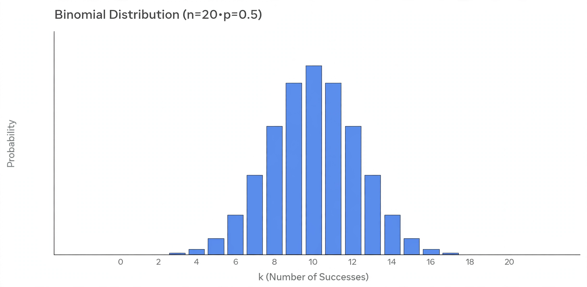

Binomial distribution

[Image: Bar chart of a binomial distribution with n = 20 trials and success probability 0.5]
The binomial distribution gives the probability of a number of successes in a fixed number of independent yes/no trials, each with the same probability of success. It is described by two parameters: n, the number of trials, and p, the success probability.
Counting heads in coin flips, defective items in a batch, or supporters in a random sample all follow binomial models. The distribution was central to Jacob Bernoulli's work and appears in his Ars Conjectandi (1713).
Properties
The mean of the distribution is np and its variance is np(1 − p). For large n it is well approximated by the normal distribution, an early case of the central limit theorem first shown by de Moivre.
The binomial is a special case of counting with fixed trials; when trials are rare events over time or space, the Poisson distribution is the natural limit.